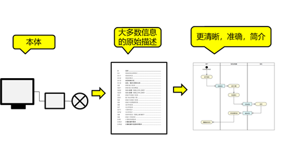

建模语言
导言
建模是认识客观世界的有力工具
流程建模是流程管理的基础
- 随着流程概念的普及，越来越多的企业意识到流程管理的重要性。
- 流程建模是流程管理的基础，如果无法描述，就无法认知，如果无法认知，又何谈管理。
建模语言符号的多样性与统一性
模型语言符号的多样性
由于地理隔离和信息壁垒，在人类发展的历史长河中，不同民族不同行业对同一个客观事物的描述形成了不同的语言模型
就像汉字是中国人书面表达的标准，阿拉伯数字是全世界数字表达的标准
各行各业
各行各业的专属建模语言
- UML 用于软件工程建模，包括：业务建模、需求建模、设计建模、测试建模。
- Sys ML用于系统工程建模，包括：系统需求建模，系统设计建模。
- Archimate用于企业架构建模，包括：战略目标，业务架构，应用架构，技术架构。
- Modelica用于物理设备的建模，包括：物理结构，算法逻辑。

建模还面向特定应用制定了相关的标准，例如：
- UPDM：武器装备统一建模平台
- NIEM：跨领域信息交换方法与技术
- BPMN：业务流程建模符号
各种语言、图形都是人类对现实世界和思维的建模
流程领域
在流程领域，流程建模的标准有哪些？
流程领域的多种模型语言符号
事实上，流程建模标准并非只能选一个，不同阶段、不同级别、不同类型的模型，或者面对不同的群体，使用不同的标准是合适的。
| 建模符号 | 描述 |
|---|---|
| 流程图（Flow Charting） | ANSI（美国国家标准学会）标准，语言符号较为简单，用于流程的“快速捕获” |
| 事件处理链（EРC） | 在ARIS的框架内开发，将事件视为流程步骤的触发或结果，对建模复杂的流程很有用 |
| 统一建模语言（UML） | 由OMG（对象管理小组）维护，这是一套标准的制图技术，主要用于描述信息系统要求的符号 |
| 集成定义语言（IDEF） | 联邦信息处理标准，着重强调流程的输入，输出，机制和控制，并清楚地将流程的细节向上和向下链接 |
| 业务流程模型（BPMN） | OMG（对象管理小组）创建的标准，一共103个图标，可用于向不同对象展示流程模型 |
模型语言符号的统一性
通过建模可以对客观事物进行准确描述，有了统一标准的模型，沟通便快速进入主题。
各行各业
- 随着人类交流越来越频繁和学科交叉融合度越来越高，信息交流的统一与规范就显得越来越重要
- 我们通过统一模型语言符号对客观世界进行科学的描述，形成跨种族跨国家的共识
| 电路图 | 设计平面图 | 晶体模型 |
|---|---|---|
统一的建模语言有助于减少信息的错误理解和交流成本，更好得协调各方共同关注探讨核心问题。
流程领域
企业流程管理，需要建立统一的、标准的流程语言，否则，各方在表达流程的时候将陷入混乱，流程管理也将无从谈起。
业务流程的几种主流流程建模语言符号规范
什么是业务流程？
要对业务领域进行建模，我们需要了解基本的术语。最基本的是业务流程。根据BusinessDictionary.com [2]，它是“一系列逻辑上相关的活动或任务（例如计划，生产或销售）一起执行以产生一组定义的结果”。在现实生活中，我们会考虑许多并行发生的业务流程。在大多数情况下，他们被设定为实现许多目标。组织越大，过程与结果之间的关系就越复杂。迫切需要使用清晰的模型以图形方式解释复杂的过程。
流程图（Flow Charting）
流程图基于一组用于操作决策的符号以及其他主要流程元素。最常见的流程图表示法在1970年被批准为ANSI标准。
优点
- 符号集较为简单
- 理解较为容易
- 有助于建立共识
- 无需专门的工具
缺点
- 多样化的自定义使得不同企业间的语言存在差异
- 用于描述复杂的业务流程时可能不够精确
- 缺乏描述性属性集
事件流程链（EPC）
EPC全称事件驱动流程链Event-driven Process Chain，是在1990年代初期由萨尔兰德大学的Wilhelm-August Scheer教授在ARIS框架内开发的。EPC认为流程是由一系列事件触发的，并且针对事件的行为又将引发新的事件。因此，流程通常是事件-功能-事件的形式。
EPC包含四个主要要素：事件（Event）、功能（Function）、组织单元（Orgnization Unit）、信息（Data）。EPC严重依赖于称为“规则”的逻辑运算符，包括“与”，“或”和“异或”。这些规则对象可以表示流程中的决策、测试、并行性和收敛性。

优点
- 在德国等欧洲国家，尤其是在跨国企业中使用广泛
- EPC流程具有较强的可读性
- 上手较为简单
- 用于识别过程约束的最强大和最通用的工具之一
缺点
- 在欧洲外知名度低于BPMN和流程图，国内应用更为匮乏
- 建模团队必须在使用符号方面受到约束，以避免可能出现的逻辑空白
- 受限于ARIS工具，国内常用的流程建模工具鲜有支持EPC
统一建模语言（UML）
UML（统一建模语言，Unified Modeling Language）是一种定义良好、易于表达、功能强大且普遍适用的可视化建模语言。 UML提供了一套标准的制图技术和符号，主要用于描述信息系统的需求。虽然UML主要用于系统分析和设计，但一些组织也将UML活动图用于业务流程建模。 UML由对象管理组（OMG）维护，对象管理组是信息系统领域的标准制定机构。
优点
- 完善的用户社区
- 参考资料丰富易得
- 面向对象语言类型，适合程序员
缺点
- 业务流程建模是次要用途
- 符号表示可能因工具而异
系统模型语言 SysML
优缺点同UML
集成定义语言IDEF
IDEF是一种建模语言家族，其用途广泛，从功能建模到数据、模拟、面向对象的分析/设计和信息收集。IDEF包含从IDEF0到 IDEF14。
IDEF由美国空军构思并于 1970 年代中期开发。它是作为记录业务流程和评估它们的主要工具而开发的。现在，这种技术被用作研究组织、捕获“原样”流程模型和模拟商业社区运营的严格框架。
IDEF包含一组非常简单的符号，其中包括带有箭头的过程框，这些箭头表示输入、输出、控件和机制。尽管从左至右，从上至下分别读取模型的每个级别，但是主要步骤所使用的编号系统以一种易于表示的父级和子级分解过程之间的关联方式表示。例如，名为A1.3的子进程框被解释为父图A1的子进程。分解的每个连续级别都使用另一个小数点来继续这种沿袭的简单可追溯性。
优点
- 精确表达
- 易于遵循的模型级别逻辑分解
- 可从美国联邦政府或商业渠道获得详尽的文档
缺点
- 看起来较为复杂，在视觉上不吸引人
- 主要由方框和箭头组成的符号可能显得杂乱
业务流程模型表示法（BPMN）
Business Process Model and Notation 2.0是由Business Process Management Initiative创建的标准，现已与Object Management Group（OMG）合并。BPMN越来越被广泛接受。它提供了丰富的符号集，可用于对业务流程的不同方面进行建模。
优点
- 广泛使用和理解
- 是美国的事实上的标准
- 在美国国防部和其他政府机构中大量使用
- 用于识别过程约束的最强大，最通用的表示法之一。
缺点
- 需要培训和经验才能正确使用全套符号
- 很难看到流程的多个级别之间的关系
- 不同的建模工具可能支持符号的不同子集
架构建模语言ArchiMate
ArchiMate的主要优点是它可以促进业务与IT的一致性。假设您被要求对业务流程进行建模，但还包括在给定场景中需要什么样的IT支持的信息。在ArchiMate中，可以很容易地将两层结合在一起。
业务层+应用程序层：
BPMN
- BPMN，Business Process Model and Notation，业务流程模型与符号。
- BPMN是一套流程建模的标准，主要目标是提供一套被所有业务用户容易理解的符号，支持从创建流程轮廓的业务分析到这些流程的最终实现，直到最终用户的管理监控。
- 提供了清晰而精准的执行语义来描述元素的操作。
- BPMN规范还确保设计为业务流程执行的XML语言（如WS-BPEL），能够用这套以业务为中心的符号所可视化表示。
- BPMN2.0的提出机构：BPMN2.0规范由OMG组织提出并维护。
- 业界主流厂商参与制定：IBM、Oracle、SAP等。
- BPMN的接受程度：被广泛接受，目前全球有70余个产品实现(OMG登记的)。
BPMN发展历史
2011.1终版
BPMN的例子
一个简单的订单流程
圆形表示事件，第一个元件表示开始事件，最后一个元件表示结束事件，圆角矩形表示一个任务(task/activity)，带箭头的实现表示顺序流(sequenceFlow)
异常和结束状态
上图只描述了正常的情况。异常如何处理？所以业务流程图中应该新增其它异常分支。在BPMN中，使用菱形表示网关(gateway)，用来控制流程中的流向。注意图中包含了三个结束事件，每个结束事件表示不同的结束状态。
泳道(swimlane)和执行者(performer)
泳道用来指明任务的执行者。注意不是所有的任务都会有执行者（更精确的说，只有user task才有执行者）。
子流程
执行订单是一个子流程，子流程必须有开始事件和结束事件，子流程内部的元件禁止和外部的元件直连，只能作为一个整体与父流程的元件相连接。
BPMN2.0中的基础元件
除了事件触发的行为，你几乎可以使用的本章节的元件创建所有的业务流程。
Activity
一个activity表示一份待完成的任务或工作，用圆角矩形表示。分为任务(task)和子流程(subprocess)。
任务
任务（Task）是一个流程（Process)中的关键原子级的活动。
一个任务（Task）表示工作需要被外部实体完成，比如人工或自动服务。 任务的类型显示在矩形的左上角，用小图标区别。根据任务的类型，引擎会执行不同的功能。
人工任务(User Task)
人工任务表示需要人来执行的任务，有一个输入和一个输出。
服务任务(Service Task)
Service Task是一个自动活动，它会调用一些服务， 比如web 服务，java service等等，通过服务(可以是Web服务,也可以是自动化程序)来完成的任务。必须有一个输入和一个输出。
脚本任务(Script Task)
脚本任务时一个自动活动，当到达这个任务的时候流程引擎会执行一个脚本。通过引擎可识别的脚本语言来进行自动化操作。必须有一个输入和一个输出。支持的脚本语言有Java，JavScript，XPath1.0，mvel。如下图所示。
脚本任务与服务任务的区别。服务任务一般用来处理和外部服务之间的交互。脚本任务只用来执行一些简单的逻辑。
规则任务(Business Rule Task)
规则任务用来执行使用Drools定义的规则集，规则集通过ruleflow-group来识别。
Drools规则的定义
其他Task
除了上面Task类型，在BPMN中还有：
- User Task - 需要人在计算机的帮助下完成的任务，但UserTask的属性都与Web Service相同，两者的区别在于此处的UserTask并不意图直接由Web Serivce等来执行，而是类似文档性地指出人是在什么的帮助下完成任务的，如果使用引擎执行这里，这里还有尚待解决的新问题。
- Manual Task - 纯人工任务，没有计算机的参与。
- Reference Task - 相当于其他Task的引用。
Marker（记号）
此外，在Task上可以设置一个Marker（记号），Marker的指代作用可以 在后面具体讲解中理解。
Marker有三种类型：1）Loop Marker 2) Multiple Instance Marker 3) Compensation Marker
Loop Marker
- 也被称为Standard Loop Marker，如果指定了该Marker，该任务就会通过使用一个布尔表达式来做出是否再次执行本任务的决定，布尔表达式的检测分为执行任务前和任务后检测，任务前检查相当于while循环，任务后检查相当于until循环。
Multiple Instance Marker
也被称为MultipleInstance Loop Marker，这个Marker对应着一种编程结构for each，但是多实例Marker使得一个Task将成为多实例任务，多实例任务是最复杂的。
首先一个多实例任务，会有一个表达式，表达式的返回值是一个整数，这个整数标识当前任务还可再生成的实例数目，每个实例都可以用来去完成一个任务。
一个多实例任务，分为两种类型，Sequential和Parallel
- Sequential任务类似于Standard Loop类型的Task，所有的待执行实例，会一个接一个地去执行。
- 而Parallel则将所有的待执行实例，并排展开，同时执行，而通过判断条件来进行实例调用，而实例的调用结果和当前Task是否标记为完成还有着复杂的关系
Compensation Marker
- compenstation marker标志一个compensation task，通常使用在发生异常的状况下，如下图这个例子，当向买者收费发生异常时，就需要调用一个补偿任务，将用户打来的款再支付给用户。
子流程(subprocess)
子流程表示多个activity的组合。子流程内部的元件禁止和外部的元件直连，只能作为一个整体与父流程的元件相连接。如下图所示。
网关(gateway)
网关用来控制业务流程走向。
下面的值可以使用：
- converging：网关必须拥有多个进入顺序流， 但是只能有一个外出顺序流。
- diverging：网关必须拥有一个进入顺序流， 和多个外出顺序流。
唯一网关(Exclusive Gateway)
diverging
表示只有一个外向顺序流被执行。在执行时，必须确保至少一个外向顺序流上面的条件为true。
converging
每个入口顺序流执行完成之后，都会触发一次唯一网关后面的顺序流。
并行网关(Parallel Gateway)
Diverging
表示多个外向顺心流会同时执行。
Converging
等待所有的入口顺序流完成之后，才会触发出口顺序流。
包含网关(Inclusive Gateway)
可以同时执行多条线路，也可以在网关上设置条件
Diverging
只要外向顺心流上面的条件为true，则都会被执行。
Converging
等待所有的active入口顺序流完成之后，才会触发出口顺序流。
开始事件
表示业务流程是如何开始的。用一个细线圆表示，园中的图标表示触发的方式。
空启动事件: 表示没有指明触发者。子流程必须有一个空启动事件。
消息启动事件: 由外部消息来触发流程的执行。
定时器启动事件: 由时间来触发流程的执行。
结束事件
使用粗线圆表示，意味着流程的一个顺序流的结束。和启动事件不一样，在一个流程中出现多个结束事件是非常常见的。
空结束事件
表示流程中一个路径的结束，不返回任何结果。
消息结束事件
表示流程中一个路径的结束，并发送一个消息。
Terminate结束事件
结束整个流程的执行，即使有并行路径在执行。

顺序流(Sequence Flow)
表示顺序执行的顺序，用实线箭头表达。
数据(Data Object)
Data Object可以理解为流程实例的局部临时变量，流程实例结束后Data Object也被释放。
编排（Choreography）
编排是交互参与者之间的程序契约。池（或参与者）之间存在编排。
编排看起来类似于私有业务流程，由活动、事件和网关等组成。不同的是，编排中的活动表示一组（1个或多个）消息交换的交互，每个活动涉及两个或多个参与者。
其他
注释(Text Annotation) 用于对流程图中的元件进行解释说明。
分组(Group) 用带虚线的矩形框表达，本质上没有任何执行相关的含义
举例
| 流程图 | |
| 语义图 |
VP官网case
https://online.visual-paradigm.com/cn/diagrams/templates/bpmn/
代码
当你在建模的时候，计算机在干什么
| 我们的建模 | 计算机的记录 |
|---|---|
核心要点
流程动画
参考手术室标本管理流程动画图
https://weihuohuayi.github.io/process-simulation/
流程仿真模拟
https://my.oschina.net/u/4587239/blog/4450428
系统设计
依照特定的系统设计逻辑方法，完成系统功能、结构设计，以及参数化表征，并将设计内容与需求进行关联，确保追溯关系完整。
未来展望

期待大家在使用中继续交流
Activiti
| 序号 | 技术组成 | Activiti | jBPM |
| 1 | 数据库持久层ORM | MyBatis3 | Hibernate3 |
| 2 | 持久化标准 | 无 | JPA规范 |
| 3 | 事务管理 | MyBatis机制/Spring事务控制 | Bitronix，基于JTA事务管理 |
| 4 | 数据库连接方式 | Jdbc/DataSource | Jdbc/DataSource |
| 5 | 支持数据库 | Oracle、SQL Server、MySQL等多数数据库 | Oracle、SQL Server、MySQL等多数数据库 |
| 6 | 设计模式 | Command模式、观察者模式等 | |
| 7 | 内部服务通讯 | Service间通过API调用 | 基于Apache Mina异步通讯 |
| 8 | 集成接口 | SOAP、Mule、RESTful | 消息通讯 |
| 9 | 支持的流程格式 | BPMN2、xPDL、jPDL等 | 目前仅只支持BPMN2 xml |
| 10 | 引擎核心 | PVM（流程虚拟机） | Drools |
| 11 | 技术前身 | jBPM3、jBPM4 | Drools Flow |
| 12 | 所属公司 | Alfresco | jBoss.org |
Activiti5与jBPM5技术组成